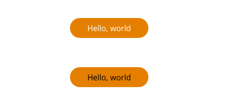
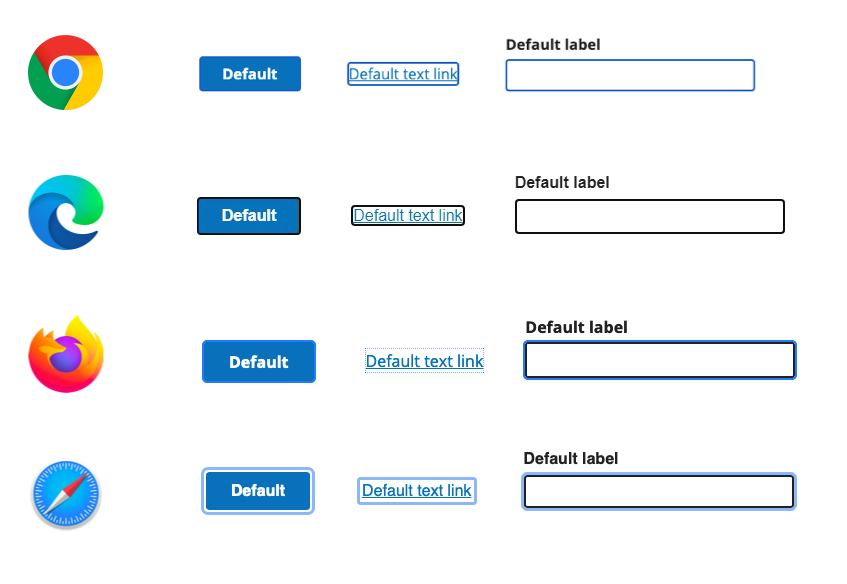
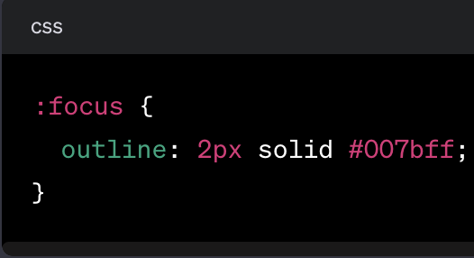
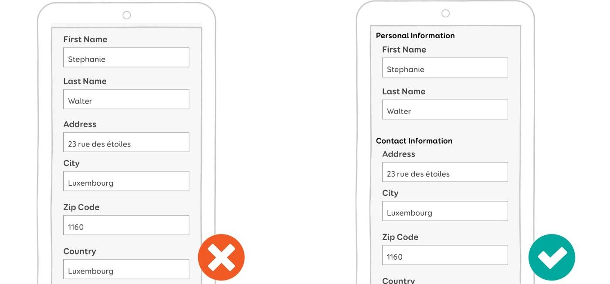
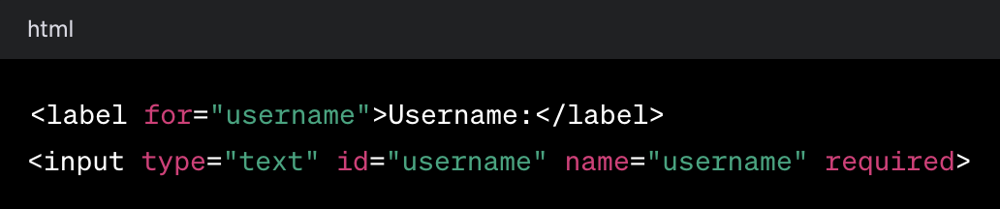
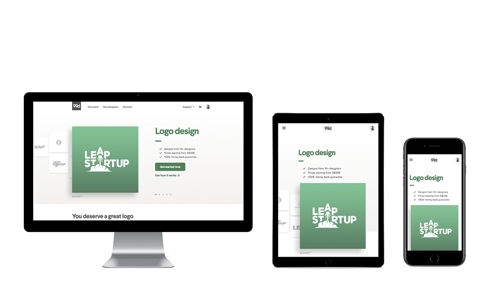

Introduction
Web accessibility is a crucial aspect of modern web development. Ensuring that websites are accessible to users of all abilities is not only a legal requirement in many places but also a moral imperative. Web developers play a pivotal role in creating an inclusive online environment. In this article, we'll explore key accessibility tips that can help web developers build websites that are usable by everyone.
Semantic HTML: The Foundation of Accessibility

Use semantic HTML tags appropriately to convey the structure of your content. Properly structured documents make it easier for assistive technologies like screen readers to interpret and present information to users with disabilities. For instance, use headings (h1, h2, h3, etc.) to organize content hierarchically, and use lists (ul, ol) to structure information logically.
Semantic HTML: The resource introduces the concept of semantic HTML, explaining that it involves using HTML tags that carry meaning about the structure and content of the page.
Accessibility Importance: The primary focus is on the role of semantic HTML in enhancing accessibility. It highlights that semantic markup improves the experience for users with disabilities, including those who use screen readers or other assistive technologies.
Screen Reader Compatibility: Semantic HTML elements provide meaningful information to screen readers, enabling users with visual impairments to better understand the content and navigate the webpage.
Document Outline: Semantic tags contribute to a clear document outline, helping all users, including those without disabilities, to comprehend the structure of the content easily.
SEO Benefits: The resource may discuss how search engines use semantic HTML to better understand and index the content, potentially improving the website's search engine optimization (SEO).
Common Semantic Elements: It may highlight specific HTML tags that are considered semantic, such as <'article'>, <'section'>, <'nav'>, <'header'>, <'footer'> and others. These tags convey meaning about the purpose of the enclosed content.
Descriptive and Meaningful Content: Alt Text for Images
Provide descriptive and meaningful alternative text for images using
the alt attribute. Screen readers use this information to convey the
content and purpose of images to users with visual impairments. Avoid
generic or redundant alt text and strive to communicate the essential
information the image conveys. Here's an example of an
HTML image tag with alt text:
 In this example, the alt text
"A red apple on a wooden table" provides a
description of the image. It's important to note that decorative
images, which don't convey meaningful content, can have empty alt
attributes (alt="") to indicate they are purely decorative and should
be ignored by screen readers. This helps avoid unnecessary information
for users relying on assistive technologies.
In this example, the alt text
"A red apple on a wooden table" provides a
description of the image. It's important to note that decorative
images, which don't convey meaningful content, can have empty alt
attributes (alt="") to indicate they are purely decorative and should
be ignored by screen readers. This helps avoid unnecessary information
for users relying on assistive technologies.
Color Contrast: Readable Text for Everyone
Maintain sufficient color contrast between text and its background to ensure readability for users with low vision or color blindness. Use tools like WebAIM's Contrast Checker to verify that your color choices meet accessibility standards, such as the WCAG (Web Content Accessibility Guidelines).
Focus Styles: Highlighting Interactive Elements
Ensure that interactive elements, such as links and form controls, have a visible and clear focus indicator. This helps users who navigate using a keyboard or other assistive technologies to understand which element is currently active. Customize focus styles to make them distinct but not distracting. 
Forms: Create Accessible Input Fields and Labels
Use proper form markup with associated labels to make forms accessible. This benefits users who rely on screen readers and other assistive technologies to navigate and complete online forms. Additionally, provide clear instructions and error messages. 
Responsive Design: Accessibility Across Devices
Create responsive designs that work seamlessly across various devices and screen sizes. A responsive design not only enhances the user experience but also ensures that your website is accessible to users with disabilities who may be using different devices to browse the web. The goal is to ensure a seamless and consistent user experience across different devices, including desktops, laptops, tablets, and smartphones. Accessibility is a crucial aspect of responsive design, as it aims to make digital content usable and accessible to people with disabilities.
In summary, responsive design is about creating flexible and adaptive layouts, and accessibility is about ensuring that these layouts are usable by everyone, including those with disabilities. Combining these principles results in a web experience that is inclusive and performs well across a diverse range of devices and user scenarios.
Conclusion:
In conclusion, fostering accessibility in web development is not just a best practice; it's a fundamental responsibility. The digital landscape is diverse, and users bring a wide range of abilities and disabilities to the online experience. As web developers, our role extends beyond mere functionality and aesthetics; it encompasses creating an inclusive space where everyone can participate.
Prioritizing accessibility in web development is a commitment to inclusivity and a positive user experience for everyone. By implementing these accessibility tips, web developers can contribute to a more accessible digital landscape where users of all abilities can navigate, interact, and engage with online content. Remember, accessibility is not just a checklist; it's an ongoing process of improvement and consideration for the diverse needs of users.
Implementing semantic HTML, providing meaningful alt text, ensuring keyboard navigation, maintaining color contrast, and focusing on responsive design are not just checkboxes—they are the building blocks of an accessible web. By incorporating these practices, we not only adhere to legal requirements but also contribute to a more compassionate and user-friendly internet.Remember, accessibility is an ongoing commitment. Regular testing, user feedback, and staying informed about evolving standards such as WCAG are essential. Every improvement made to enhance accessibility is a step towards a digital world that values diversity and empowers users, regardless of their abilities.In the ever-evolving field of web development, let's continue to champion inclusivity, break down digital barriers, and ensure that the online experience is truly for everyone. It's not just about writing code; it's about creating connections, fostering understanding, and making the internet a space where everyone is welcome.